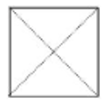
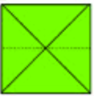
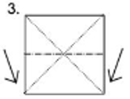
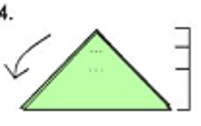
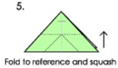
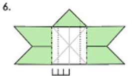
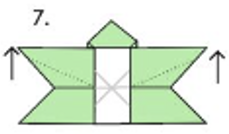
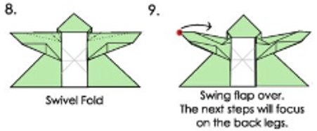
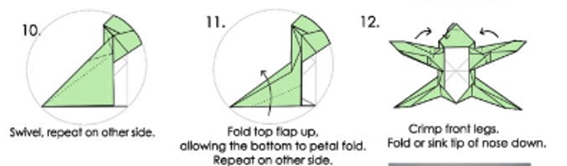
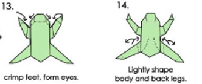

Here, we will help you to be more comfortable in making advanced cool Origami!
Begin with a square sheet of paper.
Fold the square sheet of paper in half diagonally to create a crease. Then unfold the paper.
Fold the top right corner down to meet the bottom left corner, forming a triangle. Repeat on the other side to create another triangle on the opposite side.
Fold the top half of the triangle down to meet the bottom half. Crease well then unfold.
Fold the right corner of the top flap inwards, aligning the edge with the center crease. Repeat on the left side.
Flip the origami over.
Push the bottom point of the folded flaps upwards to form the legs.
Gently fold the top corners of the legs down to create the frog’s feet.
Using a swivel fold, bring the top point of the body down to meet the base. Repeat on the other side. Then, fold the top flap up, allowing the bottom to fold in a petal shape. Repeat on the other side. Crimp the front legs to define them. You can also fold or sink the tip of the nose down at this point. .
Crimp the bottom of the legs to form the feet. Add eyes using a marker or pen. [12] Gently shape the body and back legs to complete the origami frog.
If you had a hard time making your advanced origami you can take a look at basic folds to start from
Go back to our Homepage and choose the "Explore Basic Folds"